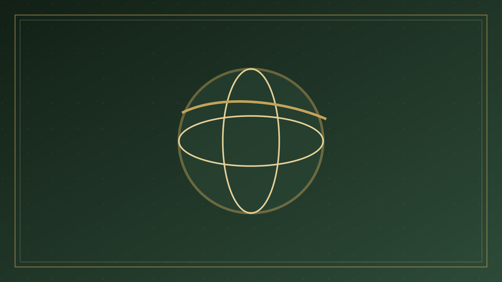

分題 02 / 08
宗教導覽
一、宗教導覽
先建立地圖，再進入論題比較
參照傳統
基督教
Christianity
從第二聖殿猶太教中興起，認耶穌為基督與主。核心敘事是創造—墮落—救贖—新天新地。
亞伯拉罕傳統
猶太教
Judaism
以妥拉、聖約與選民身份為中心。拉比猶太教在聖殿被毀後，以口傳律法延續敬拜與倫理。
亞伯拉罕傳統
伊斯蘭教
Islam
七世紀阿拉伯半島興起。核心是認主獨一（tawḥīd）與降服（islām）。穆罕默德被視為封印先知。
印度起源
佛教
Buddhism
釋迦牟尼教導四聖諦與緣起。一般不以人格創造主為終極；解脫指向涅槃，而非與神和好。
印度起源
印度教
Hinduism
極為多元的文明宗教。共同座標常是法（dharma）、業、輪迴與解脫（mokṣa），而非單一信經。
華人處境
儒、道、民間宗教
Chinese traditions
儒家重倫理秩序，道教重道與養生，民間宗教則常儒釋道合流，並以祖先與神明崇拜為日常。
基督教：參照點
基督教認獨一上帝在耶穌基督裡自我啟示。父、子、聖靈是同一本質的三位；子成為人，死而復活，使罪人因信稱義，並等候身體復活與新創造。教會是被召出的群體，聖經是規範信仰與生活的正典。
內部提醒：更正教強調「唯獨聖經、唯獨恩典、唯獨信心」；天主教與東正教同時重視聖傳與教會訓導。見本站「宗教比較」單元。
猶太教：聖約的子民
猶太教是基督教的母體傳統。申命記 6:4 的「示瑪」宣告上主獨一無二。身份不首先是「個人靈魂得救」，而是與亞伯拉罕、摩西之約連在一起的民族敬拜與妥拉生活。第一世紀有法利賽、撒都該、愛色尼等；聖殿於公元 70 年被毀後，拉比猶太教成為主流。
今日可見正統派、保守派、改革派等。對耶穌是否彌賽亞的否定，是與教會最尖銳的歷史分歧；同時，兩約聖經中的上帝、妥拉與先知，仍是共同的記憶。
伊斯蘭教：認主獨一與降服
「伊斯蘭」意即降服於真主。六大信仰（真主、天使、經典、先知、末日、前定）與五功（念、禮、齋、課、朝）構成生活骨架。古蘭經尊崇爾撒（耶穌）為先知與彌賽亞，卻明確否定他是上帝之子，也否定釘十字架的救贖意義（參古蘭 4:157 的傳統詮釋）。
遜尼派約佔多數；什葉派強調阿里及其後裔的伊瑪目職分；蘇菲傳統重內在道路。與基督教對話時，「三位一體是否三神」幾乎總是第一個誤解，必須耐心澄清。
佛教：苦、集、滅、道
佛陀診斷人生為苦（dukkha），苦因於渴愛與無明；滅苦之路是八正道。緣起與「無我」（anātman）否定一個常住、獨立的靈魂實體。上座部強調阿羅漢的自我解脫；大乘提出菩薩道與空性；淨土宗則強調他力——稱念阿彌陀佛名號，往生極樂。
華人教會常遇見的，不是巴利藏的哲學討論，而是寺廟、超度、功德與「信佛保平安」。比較時要同時看見經典佛教與民間佛教。
印度教：法、業、輪迴、解脫
「印度教」是現代總稱，涵蓋吠陀祭祀、奧義書哲思、毗濕奴／濕婆／女神虔信，以及無數地方神明。不二吠檀多視終極為梵（Brahman），個我（ātman）與其不異；虔信傳統則敬拜人格神（如 Krishna），以恩寵與奉獻求親近。
不可簡單標籤為「多神教」或「泛神論」——兩種描述都只抓住部分。對華人讀者，印度教較遠，但瑜伽、業力、轉世等觀念已滲入流行文化。
中華傳統：儒、道、民間宗教
儒家以仁、禮、孝與修身齊家治國為主軸，較少發展系統來世論，卻以「天」為道德與秩序的超越參照。道家（哲學）言道生萬物、無為；道教（宗教）則有神仙體系、科儀與內丹。民間宗教常把祖先、土地、關帝、觀音、天后放在同一屋簷下，講求靈驗、和諧與家族延續。
對華人教會，這不是「外國宗教課」，而是祖父母的神龕與喪禮。比較時要有牧養敏感：孝不是偶像，但祭祖的宗教含義需要分辨。